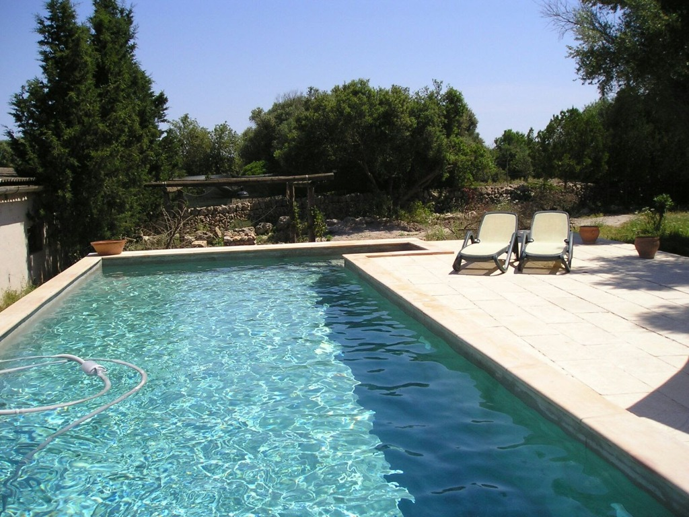
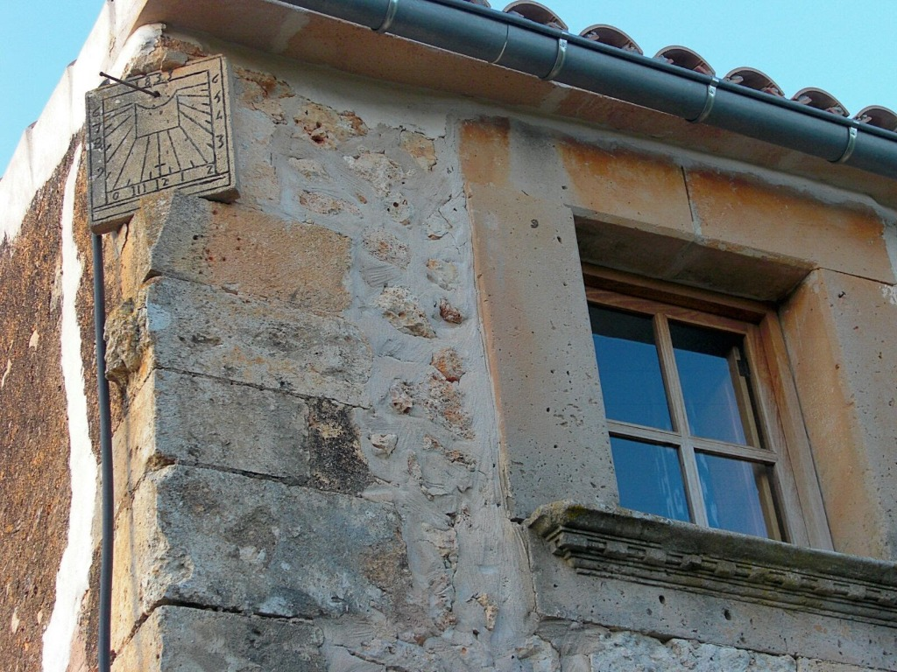
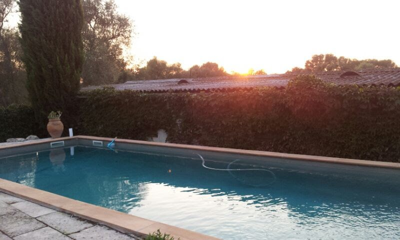
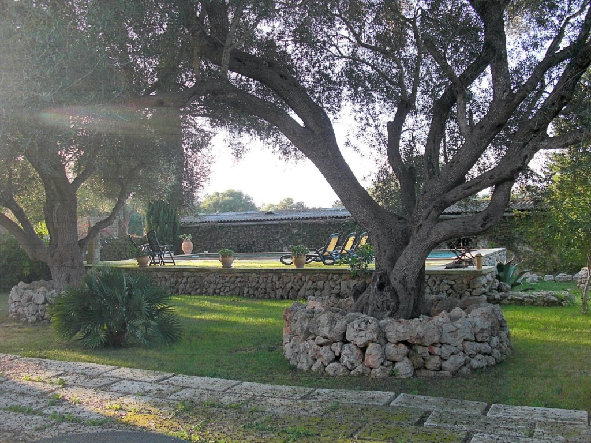

Ubicación y Entorno
Paz, naturaleza y tradición en el corazón de un entorno rural de 70 hectáreas.
La Propiedad
Información útil
park Un Entorno Rural Único
Bienvenido a Finca Son Creixell, un remanso de paz situado en un impresionante entorno rural en una finca de 70 hectáreas en el centro de Mallorca. Aquí, la inmensidad del paisaje y la calma del campo mallorquín se combinan para ofrecer una experiencia de desconexión total.
A pesar de su aislamiento y privacidad, la finca goza de una ubicación privilegiada gracias a su proximidad a Sineu. A pocos minutos de distancia, podrá sumergirse en la vida local, visitar su histórico mercado o disfrutar de la gastronomía auténtica en sus famosos celleres.
Nuestra propiedad es el reflejo de la experiencia mallorquina auténtica: muros de piedra seca, cultivos locales y una hospitalidad que le hará sentir parte de la isla desde el primer momento.
Vivencias en Son Creixell

Explora las 70 Ha
hikingPaseos interminables entre olivos, almendros y la fauna autóctona que habita nuestra gran extensión de tierra.

Esencia de Sineu
churchA solo 5 minutos en coche, Sineu ofrece historia, el mercado tradicional más famoso y cultura viva.

Sabor Auténtico
restaurantDescubre la cocina de "pagès" y los vinos de la zona en los celleres tradicionales del Pla de Mallorca.

Paz Mediterránea
wb_twilightSin ruidos, sin prisas. Solo el sonido de la naturaleza y los cielos estrellados del centro de la isla.
Reserva tu estancia
Vive la Mallorca real en Son Creixell. Consulta disponibilidad para tus próximas vacaciones rurales.